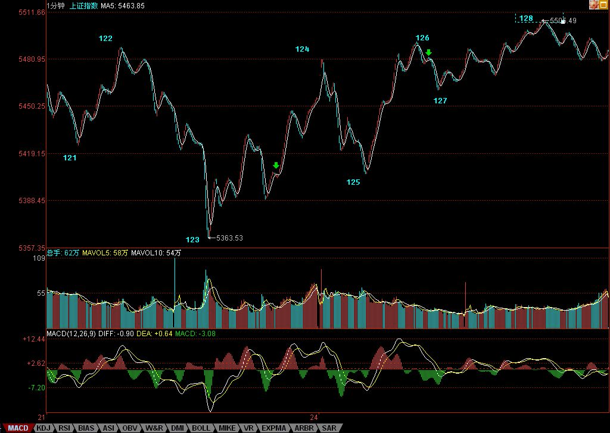

最近的行情，估计对绝大多数的人都极为困难，不过，不难发现，本ID那些股票已经越来越像喝了水井坊一样。中字头、题材股，两个翅膀，所以能翱翔到现在。在目前这样一个震荡前行、多空齐杀的行情中，有这样的节奏，就是刀锋上的凌波微步了。
那些大海龟，从明天开始，陆续回来了，当然，承销的、摇旗的，都要护着点。以前看不出本ID3600点接石头的妙用，现在也应该明白了。至于联通之类的，等于一个抢劫，你承销中移动的，有本事就别抬联通，有本事就别送钱给本ID，本ID就是收路费的。
当然，这些都是对大资金说的，小资金，一般都可以不管这些大家伙，在题材股上折腾，不是更好玩？600078，请好好研究15、5、1之类的图，看看那区间套是多么教科书。还是那句话，跌的时候，要想买点，涨的时候，要想卖点，这才是搞股票的，否则是被股票搞的。
大盘现在，没什么可说的，106开始的5分钟中枢的1分钟离开已经出现，如果能回抽形成第三类买点，那就继续折腾下去，大不了，就搞出一个30分钟中枢，那就更好玩了。
今天有点事，不能多说了。月亮圆了，注意短线震荡的加大。
先下，再见。
请注意，下面第一个绿箭头处不是笔，为什么？因为顶分型都在底分型下面了，怎么可能？而第二箭头处就是标准是按最新标准的笔了。
